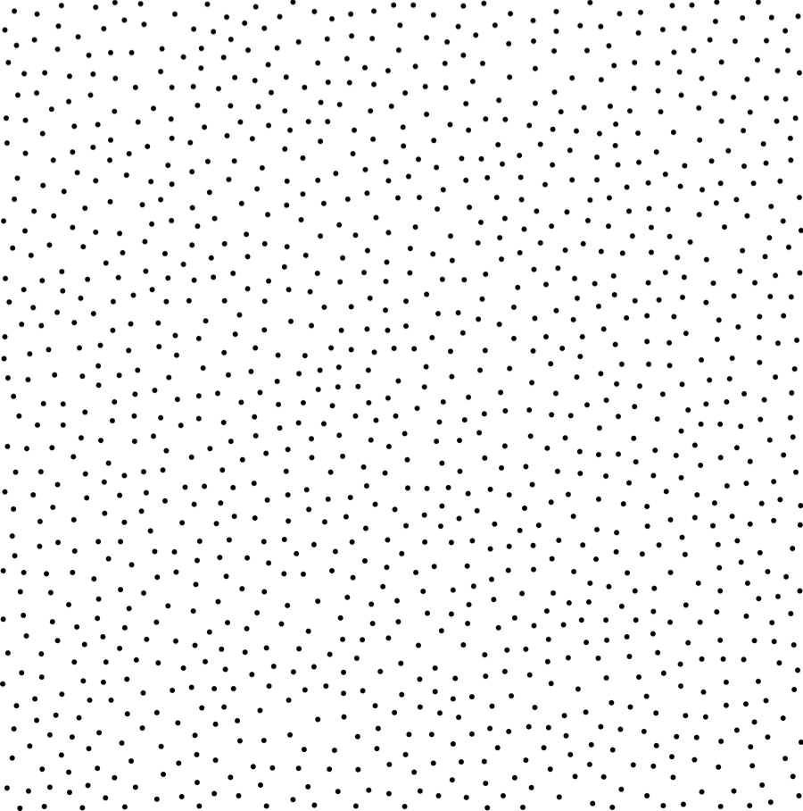
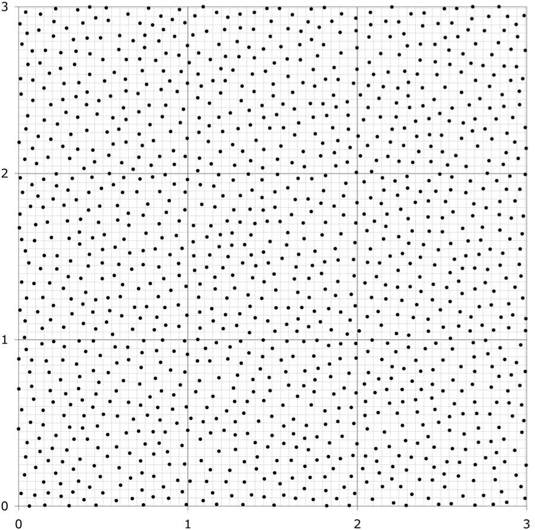
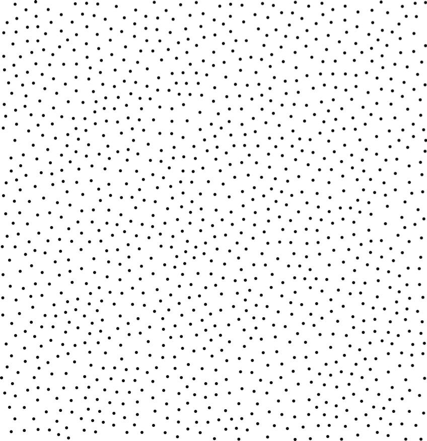
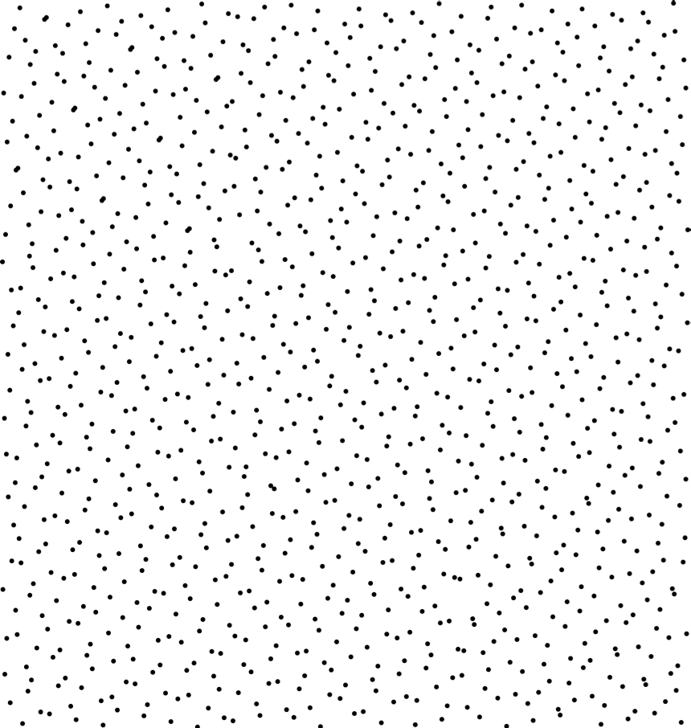
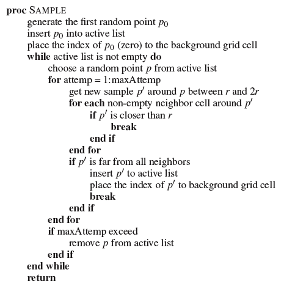
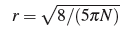

<html>
<title>CS7001 Mini-Project Report</titile>

<body>
<p>
<a href=files/report.pdf>pdf</a>(356k) 
<a href=files/poissondisk.cpp>source code</a>(16k)
<a href=files/figures.zip>result images</a>(2.8M)
<br>(click on images for a larger view)
</p>
<h1 align=center>Implementing Bridson's Fast Poisson Disk Sampling in PBRT</h1>
<table align=center>
<tr>
	<td><a href="figures/poissondisk.png"></a></td>
	<td><a href="figures/poissonGrid.png"></a></td>
	<td><a href="figures/best.png"></a></td>
	<td><a href="figures/LD.png"></a></td>
</tr>
<tr>
	<td align=center>Poisson Disk</td><td align=center>Poisson Disk with grids</td><td align=center>Best Candidate</td><td align=center>Low Discrepancy</td>
</tr>
</table>
<h2>Introduction</h2>
<p>
Sampling distributions with blue noise characteristic are useful in computer graphics. Rendering, especially distribution raytracing, relies on the sampling patten to capture many high dimensional continuos functions. Poisson disk distribution, where all the samples are at least distance $r$ apart, is considered ideal for rendering purpose \cite{Cook:1986:SSC} also because it micmics the distribution of photoreceiptors in a primate eye \cite{Yellott:1983:SCP}. However, it was too expensive to generate Poisson disk pattern in runtime by na\"{i}ve dart throwing. Best candidate algorithm \cite{Mitchell:1991:SOS} provides a termination guarantee by choosing the best one among candidate samples but does not guarantee true Poisson disk distribution. Dunbar and Humphreys overcomes this problem in $2\-D$ by carefully maintaining a ``scalloped sector'' data structure that encodes the valid sampling region \cite{Dunbar:2006:SDS}. Their algorithm can run in linear time and guarantees maximal Poisson disk distribution. Bridson further overcomes this problem in arbitrary dimensions by dart throwing in possible local regions \cite{Bridson:2007:FPD}. His approch also runs in linear time and is very simple to implement. 
</p>
<p>
This work implements Bridson's fast Poisson disk sampling algorithm in PBRT ( Physically Based Ray Tracer \cite{Pharr:2004:PBRT} ) and compares the result with best candidate algorithm and low descrapancy sampling. Although Bridson already distributed the example code for general purpose, there are specific rendering related issues that worth discussing.  
</p>

<h2>Algorithm</h2>
<p>
Bridson's algorithm samples only inside the annulus between $r$ and $2r$ of a given sample. Dart throwing is used to discover possible new samples, which will be compared against all neighbor samples in the background grid and then kept in an active list if valid. When no sample point can be added around the given sample after maximum attemps, this sample is removed from the active list. Background grid is implemented as an $n$ dimensional array with cells that can contain at most one sample. Given desired distance $r$ in $n$ dimension space, the diagonal $L2$ distance of a grid cell with length $l$ is $nl^2$, thus we choose $l=r/\sqrt{n}$. Since each sample is generated in constant time, this algorithm runs in linear time. Although maximal coverage depends on the number of attemps in dart throwing, this factor is only affected by dimension $n$ and is constant in the algorithm. In practice this number is usually small (Bridson proposed 30 in $3\-D$ case). The following procedure describes the algorithm.
</p>
<p>

</p>

<h2>Implementation</h2>
<p>
This algorithm is implemented as a sampler plugin in PBRT. Sampler is used to generate camera rays and integrator samples. The camera ray is a $5\-D$ vector that samples the image plane, camera lens and time respectively. Although this algorithm is capable of sampling this $5\-D$ space without extra cost, full coverage of each of these three domains is more desirable in rendering. Therefore, image plane, lens and time are sampled separately and then randomly associated to form the camera ray. 
</p>
<p>
Lens and time samples are in the range of $[0,1]$ for each dimension when the image plane samples range in the image size. For antialiasing purpose, we want each pixel to cover the whole lens and time domain. It would be better to sample each pixel separately rather than the image plane as a whole. This is also potentially more efficient in memory usage. Moreover, we only need a background grid that covers one single pixel and discard the samples when done with tracing this pixel. To make sure samples at the pixel boundary do not cluster together, we need to keep previous samples. With sampling order from left to right and up to down, rightmost samples from the previous pixel and the bottom samples from pixels above need to be kept and compared to leftmost and topmost samples of the current pixel. Up to $2$ rows and columns at the boundary of background grid need to keep in $2\-D$ case because $r=\sqrt{2}l$. For $n$ dimension, this number will be the ceiling of $\sqrt{n}$ in each dimension. Note that now the first sample in each pixel, except for the first one, should also compare to adjacent samples in case it is at the boundary.
</p>
<p>
One major problem we encounter is that the number of samples generated for each pixel is hard to control precisely. In $2\-D$ case, expected distance between two samples is $\sqrt{2.5}r$, which means each sample covers an area of $5{\pi}r^2/8$. Given desired samples per pixel $N$, $r$ is calculated as 

<br>
However the actual number of samples differs everytime for every pixel. Even the total number of samples for the whole image diverge from the expected value because of rounding error. Since pixel sample, lens sample and time sample are generated separately, their numbers do not always match. As a result, we have to take the smallest number to associate the camera ray and discard some samples, which in turn creates holes in the sampling domain. This effect is apparent in the final image. For the same reason, it is not practical to generate samples for the integrator given desired number of samples, even though this algorithm is good at sampling high dimensional functions. 
</p>

<h2>Results</h2>
<p>
From the sample pattern generated (Figure \ref{fig:teaser}) we can see that the per pixel sampling method respects the boundary of adjacent pixels thus maintains overall Poisson disk pattern. This implementation is compared with the built in best candidate sampler and low discrepancy sampler in PBRT on an area light scene (Figure \ref{fig:arealight}), a simple depth of field scene (Figure \ref{fig:dof16}, Figure \ref{fig:dof64}) and a classic checkerboard texture (Figure \ref{fig:checkerboard16}, Figure \ref{fig:checkerboard64}). Figure \ref{fig:teaser} shows that best candidate algorithm results in similar pattern to Poisson disk when low discrepancy sample pattern cannot avoid clustering. However rendering results indicate that low discrepancy works slightly better than Poisson disk in some cases. In contrast, although best candidate has similar pattern to Poisson disk, its results are generally noisier. One reason could be because PBRT always reuses a pre-generated pattern to tile over the whole image plane for best candidate algorithm is too slow in runtime. Another reason is this Poisson disk implementation usually generates more samples than the expected value.
</p>
</body>
</html>
